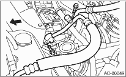
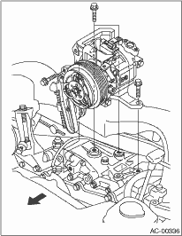
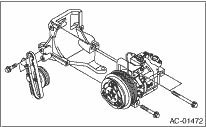

1. Perform the compressor oil return operation. 
2. Turn the A/C switch to OFF and stop the engine.
3. Using the refrigerant recovery system, discharge refrigerant.
4. Disconnect the ground cable from the battery.
5. Remove the V-belts.
6. Remove the generator.
7. Remove the low-pressure hose and high-pressure hose.

8. Disconnect the compressor harness from body harness.
9. Loosen the bolts and remove the compressor bracket.

10. Loosen the bolts, then remove the bracket from the compressor.
